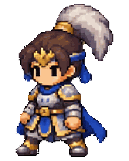
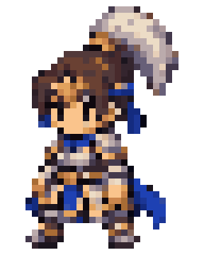
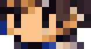
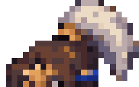
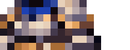
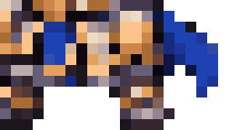
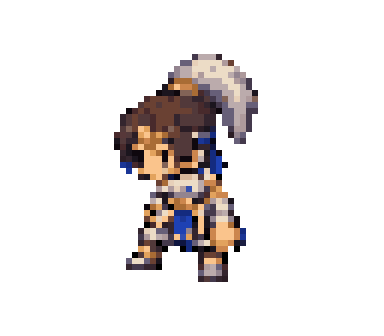
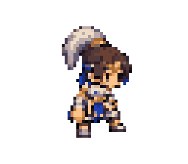
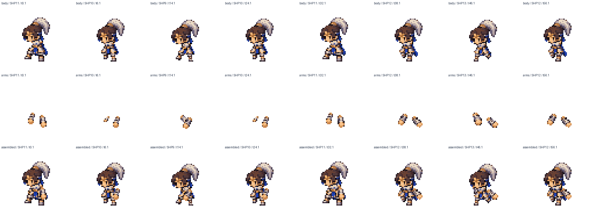

A 原始 PNG 草稿


B 實際 TYPE1 圖塊

C 真正 WebGL 輸出


本頁只有修改前證據及計劃。尚未重繪角色、替換圖集或修好行走，不將這些截圖當成新版 Before / After。備份已推送：backup-before-zhaoyun-hd-walk-20261103，基準 c8bf2ad。
問題主要在來源素材縮成 TYPE1 格位及部件接合。目前 Three.js 忠實顯示已縮小的圖塊，繼續調整 DPI 不會補回五官和盔甲結構。Walk 混用攻擊身體、頭胸各自置中及手臂未按新角色接合校準，需從畫作與配準修正。


200個站立／Walk／Slow／Fast方向影格樣本，官方組合與WebGL實際讀回差異0像素。沒有新的插值色、Mipmaps、抗鋸齒或透明白邊。來源設計的細碎色階和壓縮到小格的結構損失仍在。
以下全是現有圖塊裁切，不是新設計。括號是裁切範圍，包含部位周邊。批准後會在相同範圍和顯示尺寸提供真正的新舊比較。




三種Walk共用同一組姿勢，時長分別64／96／32 ticks；沒有fb/du前傾位移，也沒有整張角色旋轉。問題在2D就存在。


此處是現有官方Pattern的左右觀察角，畫作仍屬斜側面；不是已完成的兩套獨立真側面。官方Walk只有前／後兩組原畫與鏡像，相鄰視角共用畫作。

候選圖集先獨立保存；未通過的格位和動畫清楚標示，現用圖集保留。SEQ順序與時長優先保留，只在有接合證據時另列趙雲專用SHP偏移。原有資料非空測試不再等同美術通過。
原生人物24×38的密度不能變成高清插畫。若原TYPE1重畫樣板仍不足，再另行提出真正重繪的2×伴隨HD紋理及logical/physical atlas分離方案；絕不把256×488直接放大就當完成。其UV、半像素密度、檢查器及原版fallback影響會另行審批。
若要求獨立正面、背面與真側面步行，而非現有Pattern共用斜側圖，也需另批方向專用圖塊／SHP選擇。這兩項目前均不實作。
請先批准方案 A 第一階段：在原TYPE1內重繪五個站立格位，提交面部、頭髮、胸肩、腰甲靴子的相同尺寸Before/After。此批准不會自動啟動規格擴充，也不跳過後續畫質與步態驗收。